Introduction to Computer Networks
Data Communication
Data communication refers to the transmission of digital or analog data between two or more devices. It involves the exchange of information through transmission media such as cables or wireless channels.
There are three main characteristics of efficient data communication system :
- Reliable Delivery
- Accuracy
- Timely Delivery
Components of data communication system :
- Message
- Sender
- Receiver
- Transimission medium
- Protocols
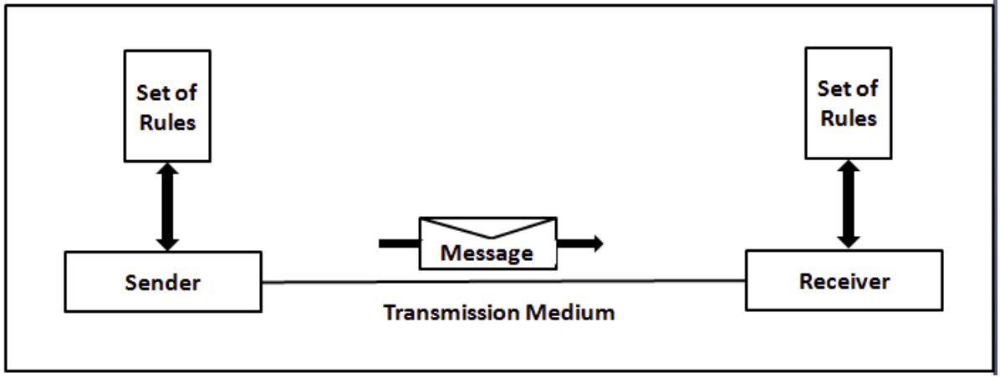
Computer Network
A network is a set of devices or nodes that are connected via communication media or channel.
Criteria for effective communication for network :
- Performance : Various factors are
- Transit time
- Response time
- Throughput
- Reliability
- Security
Network Computing Models
Network model describes the organization of nodes in the network. It refers to the way in which the different nodes are interconnected.
The different network computing models are :
- Centralized computing :
Centralized computing is the computing model in which multiple computers/clients/nodes are joined to one powerful mainframe computer/server. It is also known as client-server computing.
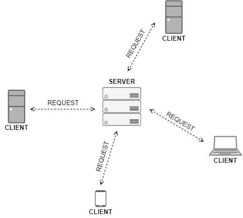
- Distributed computing :
Distributed computing means hat the task is divided among multiple computers. Distributed computing interconnects one or more personal computers or workstations.
- Collaborative/Hybrid computing :
It is the combination of centralized and distributed computing and in this computing, the nodes are able to serve the basic needs of their users but they are dependent on some other computers for processing some specific request.
Data Transmission
Data transmission involves the movement of data between devices.
Types of Data Transmission :
Transmission Modes
Transmission modes define the direction of data flow between two devices. It can be simplex (one-way communication), half-duplex (two-way, but not simultaneously), or full-duplex (two-way simultaneous communication).
- Simplex :
In simplex mode, the data is transmitted only in one direction.
- Half-duplex :
In half-duplex mode, the data is transmitted in both directions but only in one direction at a time.
- Full-duplex :
In full-duplex mode, the data is transmitted in both directions simultaneously.
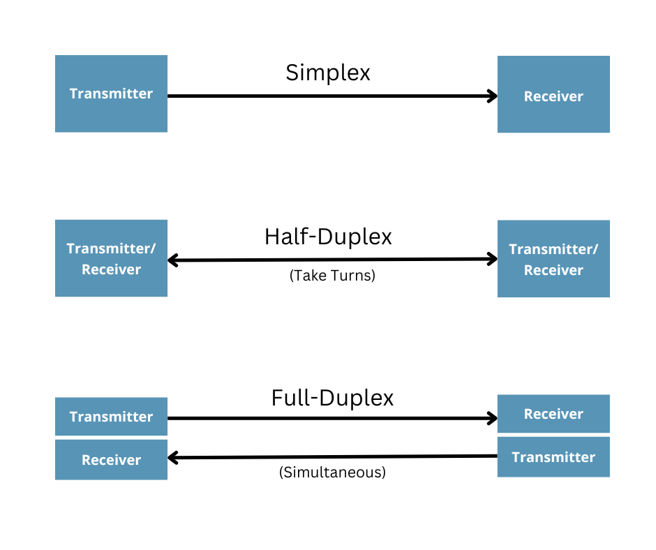
Line Configuration
Line configuration refers to the way data is transferred between devices. It can be point-to-point or multipoint, depending on the number of devices connected.
- Point-to-Point :
It uses dedicated link between the devices.
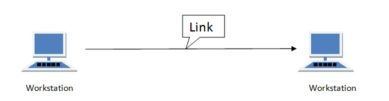
- Multipoint :
It uses shared links between the devices. And these networks known as Broadcast Networks.
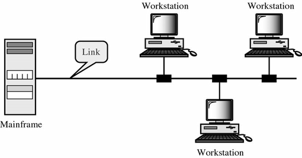
Network Hardware
Networks are classified on the basis of :
- Scale :
Networks can also be classified based on the physical size of processors and the inter-processor distance.
- Geographical :
- PAN (Personal Area Network) :
PANs are networks that are local to a single person or a small group of people. They are typically used to connect computers, printers, and
- LAN (Local Area Network) :
LANs are networks that are local to a single building or a small group of buildings. It is used to link devices in single office, building or a campus.
- MAN (Metropolitan Area Network) :
MANs are networks that are local to a single city or a small group of cities. Example like Telephone company network.
- WAN (Wide Area Network) :
WANs are networks that covers a large geographic area such a country, continent or even whole of the world. Example like Internet.
- Relationship :
- Client-Server Model :
In such networks, there exists a central controller called server(which controls the network resources and provides services to other computers). All other computers in the network are called clients.
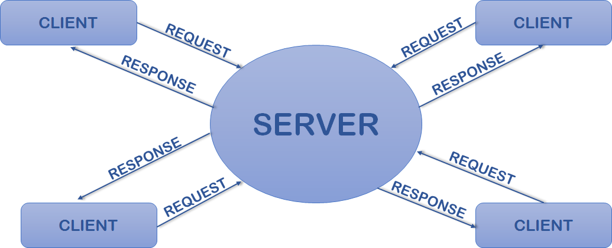
- Peer-to-Peer Model :
In such networks, there is no central controller/master/server. All computers in the network are called peers. Each device is responsible for setting up and maintaining its own security.
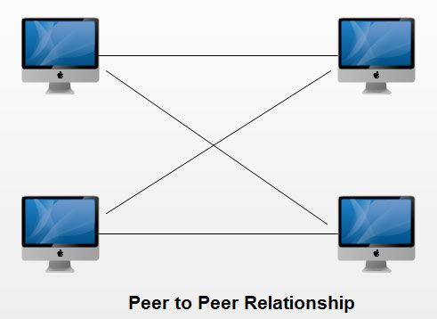
- Hybrid Model :
Hybrid networks are the networks that are based on both peer-to-peer and client-server relationship.
Network Software
Network software involves the layers and protocols used for communication. The OSI model defines seven layers, each responsible for specific functions, and protocols ensure standardized communication between devices.
- Layers :
The seven layers of the OSI model are: Physical, Data Link, Network, Transport, Session, Presentation, and Application. Each layer has a specific role in the process of communication over a network. Data is passed from one layer to the next, starting at the Application layer in one station, and proceeding to the Physical layer, then passing through the layers in reverse order at the receiving station.
- Protocols :
Protocols are sets of rules that govern communication. Protocols exist for several different applications, including for email (POP and SMTP), file transfer (FTP), and web browsing (HTTP).
- Interfaces :
An interface is a shared boundary across which two separate components of a computer network exchange information. The exchange can be between software, computer hardware, peripheral devices, humans, and combinations of these.
- Services :
Network services are applications hosted by servers on a computer network, to provide some functionality for members or users of the network, or to help the network itself to operate.
- Encapsulation :
Encapsulation is a method of designing modular communication protocols in which logically separate functions in the network are abstracted from their underlying structures by inclusion or information hiding within higher level objects.
Types of Services Offered by Layers
The layers can offer two types of services:
Connection Oriented Service
A dedicated route is established between the sender and receiver.
or
A Connection Oriented Service is a technique that is typically used to transport and send data at the session layer. The data streams or packets are transferred or delivered to the receiver in a similar order in which they have been transferred by the sender. It is actually a data transfer method among two devices or computers in a different network, that is designed and developed after the telephone system. Whenever a network implements this service, it sends or transfers data or message from the sender or source to the receiver or destination in the correct order and manner.
There are two ways in which connection-oriented services can be done:
- Circuit-Switched Connection : A dedicated route is established between the sender and receiver, and the whole data or message is sent through it.
- Virtual Circuit-Switched Connection : A preplanned route or path is established before data or messages are transferred or sent.
Connectionless Service
A Connectionless Service is a technique that is used in data communications to send or transfer data or message at the Transport Layer of the Open System Interconnection model. This service does not require a session connection between the sender or source and the receiver or destination. The sender starts transferring or sending data or messages to the destination. In other words, we can say that connectionless service simply means that a node can transfer or send data packets or messages to its receiver even without a session connection to the receiver.
Some of the protocols for connectionless services are :
- Internet Protocol (IP) : All packets in an IP network are routed independently. They might not go through the same route.
- User Datagram Protocol (UDP) : This protocol does not establish any connection before transferring data. It just sends data that’s why UDP is known as connectionless.
- Internet Control Message Protocol (ICMP) : ICMP is called connectionless simply because it does not need any hosts to handshake before establishing any connection.
- Internetwork Packet Exchange (IPX) : IPX is called connectionless as it doesn’t need any consistent connection that is required to be maintained while data packets or messages are being transferred from one system to another.
Network Topology
Network topology defines the physical or logical arrangement of devices in a network. Common topologies include Bus, Ring, Star, Mesh, Tree, and Hybrid.
Bus Topology
In a bus topology, all devices are connected to a central cable, called the bus or backbone. Bus networks are relatively inexpensive and easy to install for small networks.
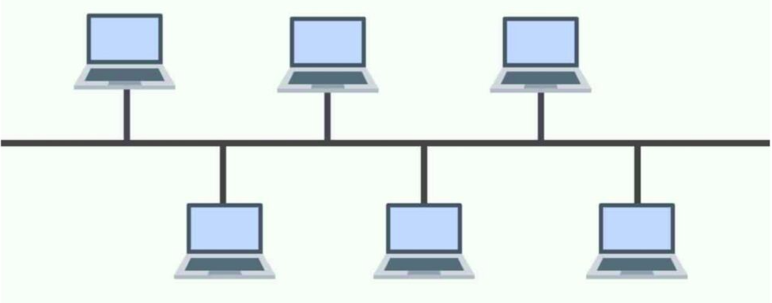
Ring Topology
In a ring topology, every device has exactly two neighbors for communication purposes. All messages travel through a ring in the same direction.
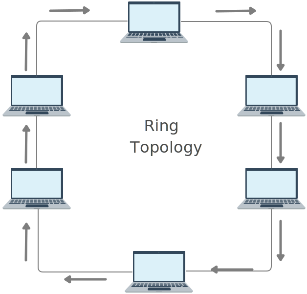
Star Topology
In a star topology, every device is connected to a central hub. The hub acts as a repeater for data flow.
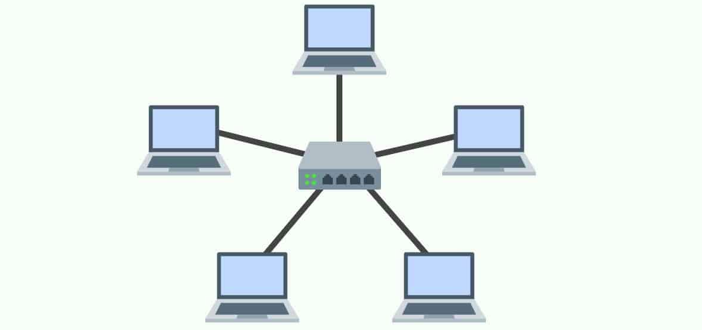
Mesh Topology
In a mesh topology, every device is connected to every other device on the network. Therefore, it can handle high amounts of traffic and re-routing around links that have failed.
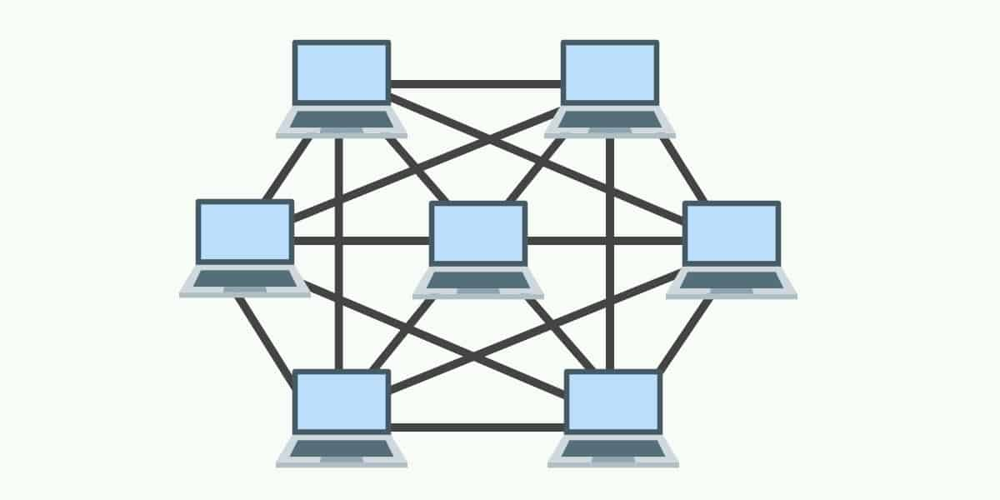
Tree Topology
Tree topology is a variation of star topology where the hubs of many individual star networks are connected by a linear bus.
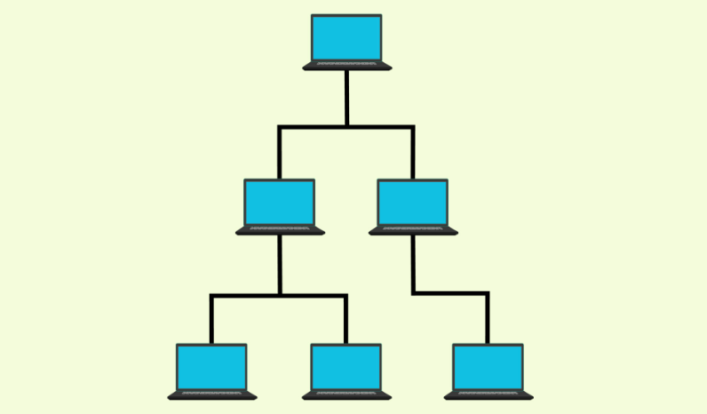
Hybrid Topology
Hybrid topology is an integration of two or more different topologies to form a resultant topology which has many advantages (as well as disadvantages) of all the constituent basic topologies rather than having characteristics of one specific topology.
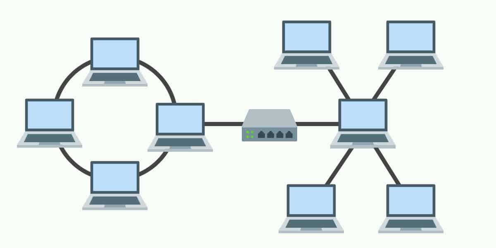
Advantages of Computer Networks
Computer networks offer numerous advantages, making them essential in modern computing:
- Resource Sharing:
Networks enable the sharing of resources like files, printers, and internet connections among connected devices.
- Improved Communication:
Efficient communication is facilitated through networks, enabling seamless exchange of information.
- Cost Savings:
Sharing resources reduces costs, making networked systems more economical.
- Reliability:
Network redundancy and backup systems enhance reliability and data integrity.
- Scalability:
Networks can easily expand to accommodate additional devices and users.